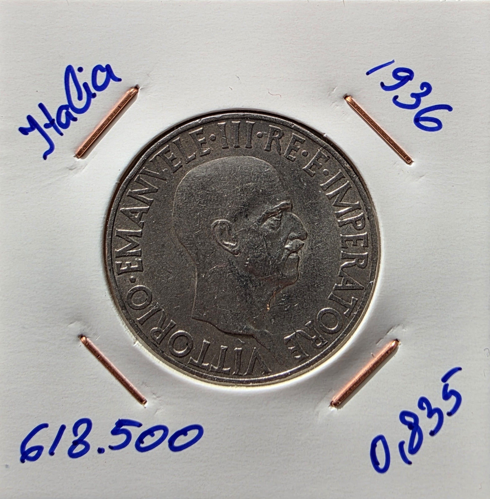
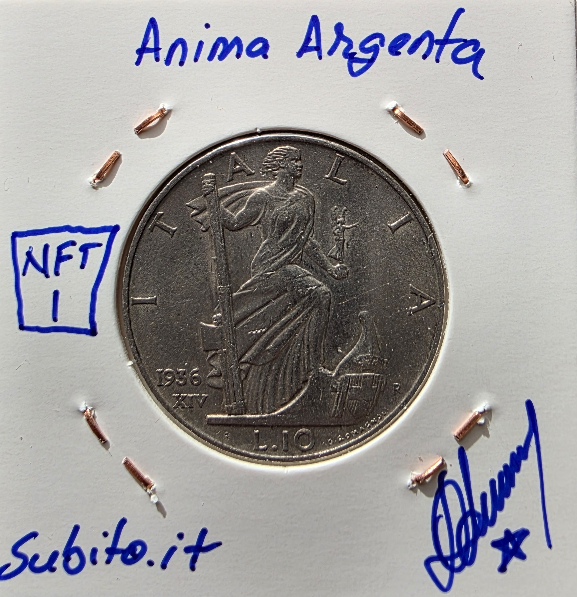

Italia · 10 Lire · 1936 · XIV Era Fascista
Plata .835 · Tiratura 618.500
El metal es el mismo. El mensaje no.
Aquí la moneda deja de medir valor y empieza a imponer relato.
Metadata IPFS:
ipfs://bafkreicz2d7qyglhsatxowycg2ye3ta6752gqbtxfbuo4bskqvy2llwxny